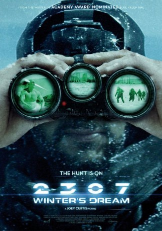

gesehen am 16.05.2017
gesehen am 16.05.2017Alternativ: 2307: Winter's Dream gesehen am 16.05.2017
 
 IMDB-Wertung: 7.7 / 10
IMDB-Wertung: 7.7 / 10  Metascore:
Metascore: 
2307: Die Erde ist zu einem Eisplaneten geworden und ein von Menschenhand kreierter Virus hat 75% der Menschheit vernichtet. Die Überlebenden vegetieren unter der Erde dahin, da sie die Temperaturen an der Oberfläche nicht lange aushalten könnten. Dort regieren nun Humanoiden, die von den Menschen gesteuert werden. Eines Tages bricht der Humanoid AHS aus, um eine Revolte gegen die Menschen zu starten. Ein General sendet eine Spezialtruppe, um ihn zu erledigen. Quelle: AscotElite
Jahr: 2016
Dauer: 101 Minuten
FSK: 16
Land: USA Studio: Vertical EntertainmentTonspuren: DD5.1 - ,
Untertitel: Deutsch,
Auflösung: 1080p (1920x804) Größe: 3840 MB
Genre: Sci-Fi
Regisseur: Joey Curtis
Drehbuch: Uwe Erichsen
Soundtrack:
Darsteller:
Datei: X:\2016(G-M)\Humanoid - Der letzte Kampf der Menschheit (2016, FSK16, 1920x804).mkv seit 04.05.2017
Festplatte: HD 2016(A-Z)
 Es gibt insgesamt 164 Filme in der Gruppe '2016(G-M)'
Es gibt insgesamt 164 Filme in der Gruppe '2016(G-M)'